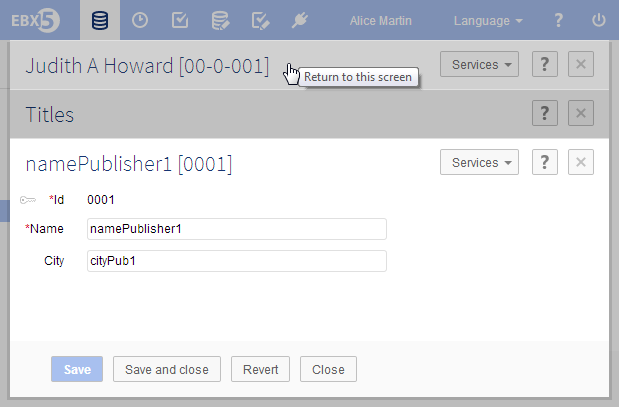
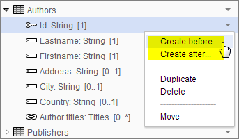
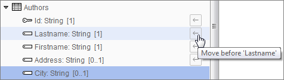
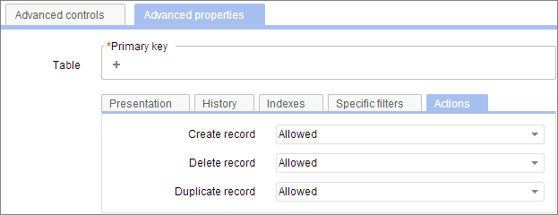

Release date: November 25, 2013
In addition to bug fixes on version 5.4.0, this version includes performance improvements and user interface enhancements, notably for:
Hierarchical views
Nested pop-ups
Data Model Assistant
A number of other new functionalities and API additions are also included.
Previously, when navigating away from a hierarchical view, the node expansion state was lost. Now, when leaving a hierarchical view, the tree navigation state is preserved so that the display is the same upon returning to the view.
A new property has been added to the custom hierarchical view definition to allow hiding orphan nodes from the view.
A new property has been added to the custom hierarchical view definition to allow setting custom localized labels for the root node.
It is also now possible to use the definition of the custom view to completely hide the root node of the hierarchy.
The new method setDefaultIconDisplayed has been added to allow disabling the default hierarchy node icon. This makes it possible to specify a custom icon programmatically.
See UILabelRendererForHierarchyContext.setDefaultIconDisplayed in the Java API for more information.
The layouts of nested pop-ups has been updated to optimize the space available for the active pop-up. In particular, this improves usability when numerous pop-ups are open.
The maximum number of nested pop-ups for foreign key and selection node previews is now 15 levels.
Furthermore, when multiple records are opened in nested pop-ups using 'Preview' buttons, it is now possible to return directly to one of the higher-level pop-ups or to the main interface simply by clicking on the desired context. All pop-ups above the selected level are closed and their sessions are ended.

Loading indicators are now displayed more consistently in the user interface whenever navigational tree nodes are expanded, before the contents appear.
Various components of data set can now be hidden in the workspace using the web component API. The new HTTP parameter dataSetFeatures allows hiding elements from a form, such as the title and buttons.
See Layout parameters for more information.
The method getURLForEndingServiceInPopup has been added for getting a URL that ends the service in a sub-session and closes the preview pop-up.
See ServiceContext.getURLForEndingServiceInPopup in the Java API for more information.
In the DMA, the services for building the data structure of a data model have been simplified. Now, it is possible to create elements at a specific position in the data model by using the menu of an adjacent node at the same level. Access permissions have been simplified accordingly. That is, any access permissions pertaining to obsolete data structure actions are no longer used.

The service for moving a node to a specific position has been simplified. This can be done by selecting the 'Move' service, then choosing the new position from those proposed.

The editors for table and foreign key have been simplified to be more intuitive.
Under the advanced properties of a table, there is now a Table > Actions tab for statically setting whether certain actions are allowed or forbidden on the table.

As with the resolution of all access permissions, the most restrictive rights are applied. That is, if the data model statically allows an action, a data set can specifically restrict permissions by forbidding the action for certain user roles.
When data set inheritance is enabled, the new property onDelete-deleteOccultingChildren allows specifying that a record's occulting child records must also be deleted when the source record is deleted.
This can also be set through the DMA in the table advanced properties, on the Table > Actions tab.
See Properties related to data set inheritance for more information.
A parameter has been added to the definition of user tasks to indicate whether the user accepting or rejecting a work item must add a comment.
See Main options > Comments required for more information.
The workflow API has been enhanced to make more information about data workflows accessible.
New methods are now provided to fetch work items according to their state.
See the following methods in the Java API for more information:
It is now also possible to get the history of a data workflow. This is useful for getting the succession of executed steps of a data workflow.
See WorkflowEngine.getProcessInstanceHistory for more information.
The process instance API has been enriched to indicate whether it is in a state of error.
See ProcessInstance.isInError for more information.
The work item API has been enhanced to facilitate getting the start and completion dates of a work item.
See WorkItem.getStartDate and WorkItem.getCompletionDate for more information.
New methods are available to allocate, deallocate or reallocate a work item. These methods are similar to the actions offered in the user interface of the data workflows area.
See the following methods in the Java API for more information:
A parameter has been added to the Administration area to set the default CSV separator used for imports and exports. This preference is set under User interface > Graphical interface configuration > Default option values > Import/Export.
It is now possible to export history tables to CSV format using the standard CSV export services.
The ability to use data services to lock or unlock a data space has been added. Locking can be used to ensure consistency between several concurrent accesses.
The operations executed while the data space is in the locked state are not performed in a single long transaction, but rather in independent transactions.
See Locking a data space and Unlocking a data space for more information.
A service has been added to the D3 section of the Administration area to allow deleting snapshots within a given date range from a delivery data space.
See Close and delete snapshots for more information.
The new method getServiceKey has been added to get the key of the current service.
See ServiceContext.getServiceKey in the Java API for more information.
The method ValueContextForValidationOnRecord.isCheckOnUserInput() has been added to the interface ValueContextForValidationOnRecord. This method allows to know if a ConstraintOnTable is performing a record-level check at user input.
For more information, see ValueContextForValidationOnRecord.isCheckOnUserInput() in the Java API.
It is now possible to directly evaluate a user's permissions without authenticating a specific session.
See Repository.createSessionPermissionsForUser for more information.
The new class XPathExpressionHelper provides methods to build, extract and use XPath expressions of the form /root/table[./field='a'], where /root/table is the table path expression and ./field='a' is the predicate expression.
See XPathExpressionHelper in the Java API for more information.
The commit process in semantic mode has been optimized to make database round trips more efficient. Improvements of up to 25% can be expected on massive operations.
The resolution of user roles now employs a cache mechanism, which improves performance. For security reasons, this cache is refreshed for each page.
The numerous JavaScript and CSS resources from previous versions are now packaged into a single CSS file and a single JavaScript file. Thus, the number of resources on which to verify a server HTTP response of 304 is reduced, improving performance.
Inheritance for workflow models is now deactivated by default.
To activate inheritance, it is necessary to set the property ebx.manager.workflow.inheritance.activation to true, in the EBX5 main configuration file.
See EBX5 main configuration file for general information about the configuration file.
Due to the fix for the bug 8540, the response for multiple data service operation requests has the element name multi_Response, which conforms to the generated WSDL, instead of multiResponse as in the previous versions.
In order to upgrade your version of EBX5, perform the following steps:
Backup your repository, including the RDBMS and the directory ebx.repository.directory.
Replace the *.war and ebx.jar files on your application server.
[7860] JDBC driver encounters an error in relational mode on PostgreSQL.
For a table in relational mode with millions of persisted records, an OutOfMemoryError is thrown upon a simple request if no fetch size is specified.
[8294] Unexpected error occurs during data set creation from a relational data model.
An exception is raised when creating a data set from a data model that is relational and if relational mode properties contain special characters.
[8312] Some data model evolutions on mapped tables are not supported.
Some data model evolutions cause compilation errors. This happens when simultaneously adding a column and activating another mapped mode, for example, history. The workaround is to first add the column, refresh the schema, then activate the mapped mode.
[8355] Display problem for non-historized lists in the history view.
When a table contains aggregated lists that are ignored in history, a display error occurs when displaying the history of the table.
[8357] Added indexes are not taken into account for existing tables in relational mode.
Indexes added to a data model may not have any effect on an associated relational table. This happens whenever an index is added and another mapped mode, for example, history, is simultaneously activated. The workaround is to first add the index, refresh the schema, then activate the additional mapped mode.
[8404] The history of occulted records is not visible if accessed from a multiple selection.
When viewing the history of a multiple selection containing occulted records, the history of the occulted records is not displayed.
[8464] Unhandled exception for RequestResults.
While iterating over a RequestResult, if the table concerned is updated concurrently, a ConcurrentModificationException may occur under certain conditions.
[8470] Error on an inherited field that is an aggregated list of foreign keys.
If an inherited field is an aggregated list of foreign keys and the source node is not itself declared as a list of foreign keys, then the following error is thrown when the validation is requested: java.lang.ClassCastException: java.lang.String cannot be cast to java.lang.Integer. A workaround is to add the foreign key declaration (osd:tableRef) on the source node.
[8564] In case of errors in a DDL script, the stack trace is not registered.
If a DDL script is executed securely and a statement fails, the 'error' field in the table DDX only registers the exception message, not the associated stack trace.
[8691] Fields disabled for history or replication can neither be indexed nor defined as foreign keys.
1) When the user disables history on an indexed field in a historized table, an unexpected error occurs upon data model validation.
This also happens when the disabled field defines a foreign key, as these are automatically indexed.
2) The same problem exists when the user disables replication on a field in a replicated table.
[8761] Cannot define indexes on a relational table which is also replicated.
If indexes are defined on a relational table which is also replicated, an error happens because of duplicate index names.
[8770] Performance is degraded when using advanced search filters on relational tables.
When using an advanced search filter on a relational table, performance is impacted. The entire table is loaded into the Java cache, which leads to performance degradation.
[8880] Duplicate column name in index when reactivating a relational table that indexes the primary key field.
When reactivating a relational table, an error occurs because an invalid SQL statement is issued. This happens if the table defines an index with a column that is also present in the primary key, or if any primary key fields also define a foreign key. For example, on SQL Server, the error is "Cannot use duplicate column names in index. Column name 'k1_' listed more than once."
[4216] Validation rules property for a node is not set to 'null' for empty values.
A node's validation rules should be set to 'null' if the value is empty. This would be consistent with the behavior for computation rules.
[7866] Redundant error message when adding an invalid formula for a string field in a computation rule.
In the DMA, when the user attempts to add an invalid formula for a string field in a computation rule, the user interface displays two error messages with the same content.
[8384] Foreign key label cannot be defined after submitting another element property.
In the DMA, if the user saves a label for a foreign key and then saves another property, the label is no longer defined.
[8554] Alignment problem on the data model 'Manage versions' page.
In the DMA, on the 'Manage versions' page, some buttons are not correctly aligned.
[8555] Missing asterisk for mandatory fields when exporting an archive from a data model.
In the DMA, when exporting an archive from the manage versions page, there is no mandatory field asterisk for the field 'Name of the archive to create'.
[8562] On Chrome, there is an alignment problem when defining a value for 'Unique fields'.
On Chrome, when defining the 'Uniqueness constraints' of a table, there is an alignment problem for the 'Unique fields' fields.
[8627] Group 'Tab properties' section is misaligned.
In the DMA, when defining the default view of a group, the 'Tab properties' section is displaced to the right.
[8636] Unexpected error occurs when creating a field that reuses a deleted complex/simple type.
When the user deletes a reusable complex/simple type, while another user concurrently creates a field that reuses this type, an unexpected error message is displayed.
[8657] Replication 'Name' field should provide an accepted pattern.
When the user creates a replication, the 'Name' field should provide a pattern to be respected. Furthermore, this field should be checked at creation, rather than at publication.
[8661] Replication property should not be available for primary key fields.
In the advanced properties for a primary key, the 'Replication' field should not be available.
[8664] Fatal error occurs when importing an XSD from a module when the destination module no longer exists.
If a data model specifies a module in its configuration and this module no longer exists, a fatal error occurs when trying to import an XSD from a module.
[8777] Non-localized label of enumeration fields are not used when localized labels are also defined.
Non-localized label are not used on enumeration items defined on fields if some localized labels are also defined on the same item.
[8801] Missing error message for mandatory field 'Module name' when including data models.
In the DMA, when the user includes another data model packaged in a module without specifying a module name, no error message is displayed.
[8812] Mandatory field asterisk is placed before 'Name' label on the publication creation page.
In the DMA, the mandatory asterisk for the field 'Name' on the publication creation page is placed after the label instead of before.
[8831] In the DMA, the bottom of a label in the 'Services' table is clipped.
On IE9 and Firefox, in the DMA, the bottom of the 'Activation paths' label in the 'Services' table is clipped.
[8540] Incorrect name for multiple data service operations in SOAP response.
The multi_Response element is named incorrectly in SOAP responses. It is named "multiResponse" instead of "multi_Response".
[8542] Generated WSDLs are invalid due to missing type definitions.
Generated WSDLs are not valid because there are no XSDs available with the namespace urn:ebx-schemas:deployment_1.0. This namespace is used for technical data, such as the last time of modification and the last modifying user.
[8906] An error occurs when launching a data workflow using data services.
When a non-administrator user launches a data workflow using a data service operation, an error occurs.
[6327] Service 'Show history' should not be available for tables when the current data space has no active history profile.
The 'Show history' service should be hidden for tables when the current data space does not have an active history profile.
[7810] Modifying a table in the 'Reference' data space under certain historization conditions results in an error.
This error occurs if all of the following conditions are true: the current data space is 'Reference', the history profile of the table is defined on another data space (other than 'Reference'), and the history profile mode is "Current data space and its direct children". Under such conditions, any attempt to modify the table (through creation, update or deletion) will fail with a NullPointerException.
[8666] In the data space merge comparison, incorrect link target is provided for an update-delete conflict.
This issue occurs during a data space merge. If a record has been updated in the child data space and it has been deleted in the parent data space, the merge interface provides a link to the wrong record comparison page. The conflict is, however, correctly reported in the table page.
[8733] In the data space merge comparison, incorrect information is displayed when a new record has been added in the child data space.
This issue occurs during a data space merge. If a record has been added in the child data space and nothing has been done in the parent data space, the icon and associated tooltip in the comparison view incorrectly indicate added content in the parent data space.
[8838] On Firefox, a data set is selected for export when opening its documentation pane.
On Firefox, when exporting a data space, if the user opens the documentation pane of a data set, that data set is selected for export.
[8493] Error-level messages in a ConstraintOnNull should not be blocking.
A record cannot be saved if a message with severity 'error' is added in a ConstraintOnNull. This type of message should not be blocking.
[8496] Selection node cardinalities may be omitted from validation.
The cardinality of a selection node cardinality is not validated if the node is within a group node and no other constraints are defined on any other nodes in the group.
[8835] An exception occurs when overriding inherited attributes that inherit from a hidden node.
If an inherited attribute inherits from a hidden node, an exception occurs when overriding it.
[7348] An error occurs in inherited fields that specify an invalid source record expression.
An error occurs when defining an inherited field that specifies an non consistent expression to the target source node.
[8260] A fatal error occurs when searching using a foreign key that is defined with a relative path.
When the user performs a search of a table using a foreign key that references a table using a relative path, a fatal error occurs.
[8381] A fatal error occurs after creating a hierarchy view.
When the user creates a hierarchy view on a join table with three links, a fatal error occurs.
[8469] An error occurs when accessing the history of a table that references a non-historized table.
An UnsupportedOperationException occurs when accessing the history of a table that references a non-historized table.
[8576] In a hierarchical view, it should not be possible to move a record such that the foreign key filter is violated.
In a hierarchical view, it should not be possible to move a record in a way that does not match the foreign key filter.
[8644] A fatal error occurs after using the service 'Remove all' on a ternary recursive hierarchy view.
On a recursive hierarchy view based on a ternary join table, when the user applies a filter then clicks the 'Remove all' button, a fatal error occurs
[8653] Fatal error occurs in a data set that has a replicated table containing special characters.
When the user publishes a data model with a replicated table whose 'Table name in database' contains special characters, a fatal error occurs when accessing an associated data set.
[8697] A fatal error occurs when updating a data model with a replicated and historized table containing a multi-value field.
In a data model that contains a table that is both historized and replicated, if the user updates a field to be multi-valued and updates the model, a fatal error occurs in associated data sets.
[8746] Search tool does not work properly in a hierarchical view that is based on a recursive ternary join table.
If the dependency links of a hierarchical view are based on a join table with three primary key fields, the search tool and pruned mode may not display the correct results.
[8827] A fatal error occurs when searching a string field using 'is different' mode.
When the user performs a table search on a string field of a table using the mode 'is different', a fatal error occurs.
[8851] View disappears after applying a view containing HTML in its documentation.
If the user applies a hierarchy view whose documentation contains HTML, the hierarchy fails to display and the workspace title is displayed as a text field.
[7657] Incorrect behaviour in child data workflow after adding a redirection to its initial transition.
In a child workflow, when the user attempts to add a redirection to its initial transition, an error message appears then quickly disappears. It is impossible to add the redirection.
[8328] Unexpected error occurs when taking a user task that defines both the data space and snapshot parameters.
An unexpected error is displayed when taking a user task that defines both the data space and snapshot parameters.
[8477] No label for 'Reject tolerance' field.
When creating a user task, there is no label for the field 'Reject tolerance' on the 'Termination' tab.
[8512] An error occurs when displaying the workflow input parameters field after changing 'Library condition'.
If 'Library condition' was already set to a different value and the user sets it to 'Last user task accepted', an error occurs and user can no longer work with the condition.
[8689] An error occurs when displaying a step in an inherited workflow model.
In an inherited workflow model, an IllegalStateException occurs when displaying a step that declares a specific ScriptTask.
[8709] Several display issues occur in inherited workflow models.
Several issues occur with UIBeanEditor when overwriting a step in a child workflow model.
[8725] Information missing from the graphical workflow view.
When a completed data workflow has a user task that was assigned to several roles and was completed after one work item was accepted, its graphical view is missing information.
[8748] Method SessionInteraction.getInputParameters().getVariableString always returns null.
The method SessionInteraction.getInputParameters().getVariableString returns null for non-built-in parameters.
[8832] User associated with a workflow publication is not saved in the publications table.
In the workflow publications table, the system user is always saved as the user reference associated with publications. The user of the session should be used instead.
[8708] Prevent data spaces with replication defined from being included as D3 delivery data spaces.
If a data space contains a data model that defines replications, it should not be possible to add it to the delivery data space table on the D3 master node.
[8358] The documentation for new search features is not up-to-date.
The documentation for the search features introduced in 5.4.0 is not up-to-date.
[8593] Behavior of merge lock on dataspace is inaccurately described.
According to the documentation, the data spaces impacted by a merge should be locked to modifications; however, the user who initiated the merge and administrator users can still modify the contents of the data spaces.
[8645] Alignment problem for 'Requesting an On Demand replication refresh' documentation.
In the documentation chapter "Replication", there is an alignment problem in the section "Requesting an On Demand replication refresh".
[8658] Incorrect message in documentation pane of 'Unique name' field during data space, data set, and data model creation.
When the user creates a data space, data set, or data model, the tool tip of the 'Unique name' field contains the incorrect message 'Syntax is not valid'.
[7441] Cannot input a value in the 'Other' separator field after an error occurs during CSV import.
This issue occurs when user has attempted to import a CSV file supplying an 'Other' separator. If an error occurs during the file import, the user can no longer enter values into the 'Other' text field.
[8436] Export downloads may fail if using SSL on Internet Explorer 8.
Due to a known IE8 issue, export downloads may not work when using SSL. See http://support.microsoft.com/kb/316431 for more information on the problem.
[8616] Unexpected error message is displayed when exporting to CSV from a recursive parent node in a hierarchical view.
In a hierarchical view, when the user exports to CSV from a recursive parent node, the user interface displays an unexpected error message.
[8703] Cannot import an archive file if the name does not contain a '.'.
If the name of the archive does not contains a '.', a '.ebx' termination is added to the target name, and the archive cannot be found by the import procedure.
[8714] Long file import error message exceeds border.
When the user exports a file with a long file name, then re-imports it, the content of any resulting error messages may exceed the red border displayed.
[8216] After modifying a 'cron' expression in the schedules table, existing scheduled tasks are not updated.
After updating a 'cron' expression in the task scheduler, existing scheduled tasks related to that schedule still execute based on the original value.
[8227] On IE8, there is no confirmation before closing comments pop-up.
On IE8, in a data workflow, no confirmation is displayed before closing a pop-up with an empty comment field.
[8243] On IE, wizard selection button outline is too wide.
On IE, when defining values for uniqueness contraint fields under table advanced properties, the selection outline of wizard button is too wide.
[8295] In the DMA, an alignment problem occurs after saving a record in the 'Included data models' table.
After saving a record in the table of included data models, the label of the "Information" tab is no longer wide enough for the text.
[8327] Error message is displayed next to the data space or snapshot text box when comparing data spaces.
In the data space comparison interface, when the user does not enter a data space or snapshot to compare, an error message appears next to the text box instead of under it.
[8344] When the user saves a filter, it is displayed using the old "Advanced search" filter.
When the user saves a filter, it is displayed using the pre-5.4.0 "Advanced search" filter. After logging out and logging back in, the filter is displayed using the new simple search.
[8345] A newly saved filter is displayed first in the list of filters.
Newly saved filters should be appended to the end of the list of filters.
[8346] If a saved search has a criterion on an enumeration node, the criterion values are not loaded.
In the typed search, if a saved search has a criterion on an enumeration node, the criterion values are not loaded.
[8360] When applying a custom tabular view, its filter is displayed using the old "Advanced filter" tool.
When defining a custom tabular view, its filter is displays the pre-5.4.0 "Advanced filter" tool.
[8410] 'Create record' should not be available for some nodes in a hierarchical view based on a filtered foreign key.
If the hierarchy dependency link is based on a foreign key that has a static XPath filter set, for example ./type='A', it should not be possible to create a child record from a given record using the 'Actions' menu if the filter does not match that record.
[8495] The method newFormRow(path) in a UI bean does not display the field label.
The method UIResponseContext.newFormRow(Path aPath) does not work in some cases. If no specific label is defined, the default label of the field is not automatically displayed.
[8500] In saved table searches, boolean criteria values are not recalled in the UI.
When reloading a saved search filter, boolean criteria values do not appear in the user interface. The values are persisted properly.
[8520] Contextual help API does not support absolute and local URLs.
The method UIFormHeader.setContextSensitiveHelpURL() always generates a link relative to the standard help URL.
[8526] Alignment problem on 'Repository ID' pattern during repository installation.
When installing a new EBX5 repository, the 'Repository ID' pattern aligned properly with the input field.
[8560] On IE8, the buttons in the bottom bar move after saving a record in the 'Included data models' table.
On IE8, after saving a record in the 'Included data models' table, some of the buttons in the bottom bar move up.
[8580] 'Specific policy' pane in child data set permissions is too wide.
When the user opens a record in the permissions table of a child data set that inherits from its parent data set, the 'Specific policy' pane under 'Value access policy' is too wide.
[8590] Search 'Add a criterion' field is displaced out of view after adding many criteria.
After adding several search criteria, the field 'Add a criterion' is no longer in view, even though it has focus. View should stay scrolled at the bottom to keep the field visible.
[8592] Asterisk displayed unnecessarily for the 'Label' field when saving a criterion in the search.
In the table search, it is possible to save a criterion without defining a value for its label. However, a mandatory field asterisk is displayed.
[8642] Alignment problem when comparing history records.
When comparing two records of a history table, some 'not defined' and 'hidden value' values are not vertically aligned with defined values.
[8794] No red 'X' icon displayed next to import error message.
When importing an XSD file into a data model or importing an XML or CSV file into a data set without specifying a file, the error message is displayed without the usual red 'X' icon.
[7525] Non-admin user can access the Administration area when accessing a permalink.
When an admin user obtains a permalink from the Administration area, and a non-admin user accesses this permalink, the non-admin user can access the Administration area.
[8005] Cannot log in with a user name containing double quotes.
When a user name contains a non-leading double quote character, it is not possible to log in.
[8006] Fatal error occurs when creating a view for a user.
A fatal error occurs when creating a custom view that defines a user whose name begins with a double quote.
[8602] Error occurs during data space creation if permissions have been imported.
In the data space permissions table, if a record with the value null for the field 'Permissions of child data space when created' has been imported, a NullPointerException occurs when the user tries to create a child data space.
[8669] A record with a key value equal to the login of the user is always in read-write mode.
Regardless of the permissions defined, a record whose key value is equal to the login of the user is always in read-write mode for that user.
[8778] Structural table permissions mayXXXX with value 'root:yes' or 'root:no' do not apply as expected.
It does not apply as expected on child data sets.